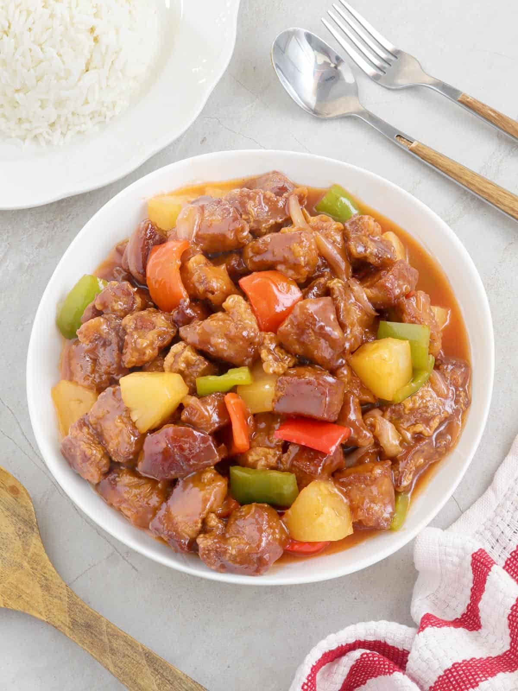

Sweet and Sour Pork

Description
This unbreaded take on a take-out classic is lighter and saucier. The addition of pineapple amplifies the sweet and sour flavors of the sauce.
This recipe is adapted from the one my Grandmother submitted to a church cookbook in the late '80s.
Ingredients
- 1 ½ lbs. Pork cut into ¾” cubes
- 2 Tbsp. Oil
- 4 cloves garlic, minced
- 1 inch piece Ginger, peeled and grated
- 2 Tbsp. Cornstarch
- ½ cup Brown Sugar
- ½ cup Rice Vinegar
- 1 ½ cup Pineapple Juice
- 2 Tbsp Soy Sauce
- 2 Bell Peppers seeded and large diced
- 1 Yellow Onion large diced
- 1 (16oz) Can Pineapple Chunks
- Season pork with salt and pepper.
- Brown in a large heavy saute pan or wok.
- While the pork is cooking, combine the cornstarch, brown sugar, soy sauce, vinegar, and pineapple juice. Mix well and set aside.
- Remove the pork to a plate lined with paper towels to drain.
- Add more oil if necessary then saute the garlic, ginger, and veggies for 5 minutes.
- Add the pineapple chunks and cook 2 minutes more.
- Return the pork to the pan.
- Add the sauce mixture and cook until slightly thick.
- Serve over rice.